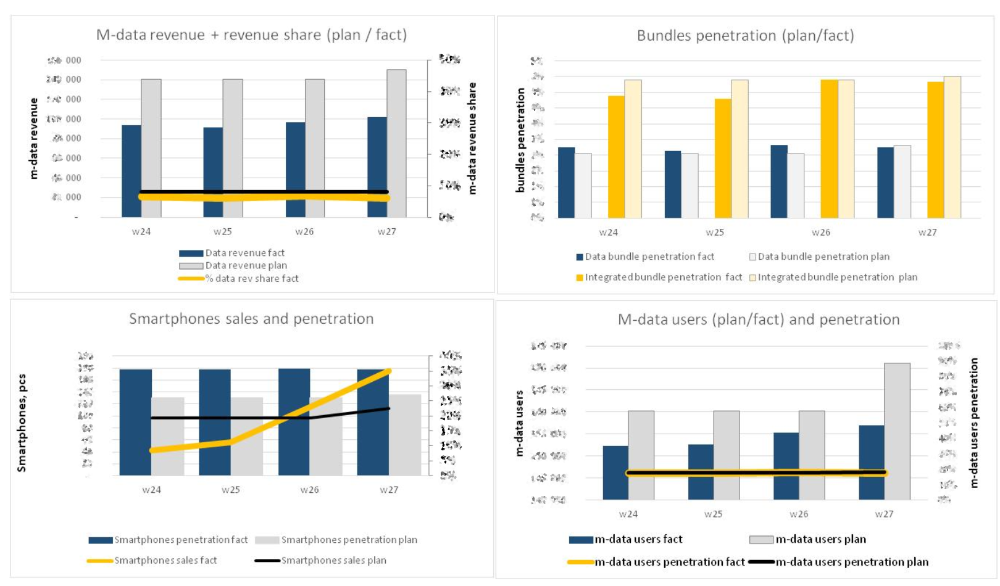

Portfolio Highlights
Below you will find brief description of my most important and favorite projects and products from my portfolio.
qvantel
White Label Marketplace Platform for Telecom
Date: 3q2017 - 2q2018
Role: product owner / analyst
Tags: #e-commerce, #platforms, #api, #integrations, #bigdata, #telecom
Qvantel is a pioneer in the field of Business Support Systems (systems which connects the core tech platforms with the employes and clients by providing UIs, processes, reporting and etc) with over 20 years of experience of successful digital transformations for Telco Operators. This means that the company is the guru of tech integrations and UI/UX development. So the idea of creating the whitelabel platform solution for data-rich and digital-process powered companies was very logical and sustainable.
Working close with the Sales Department I was responsible for the creation of concept and initial specification of platform based on existing company’s capabilities. These materials were used to pitch the clients and to design the product internally.
Developed and documented following components (Use Cases, User Stories, UI/UX):
- Marketplace Partners on-boarding and access flows
- Content Management System
- Reporting
- Targeted Advertising Management (creation and management of the ads)
Credebat
Retail Analytics Platform
Date: 2q2017 - 3q2018
Role: product consultant
Tags: #retail, #analytics, #platforms
In 2017 all russian retailers were requested to provide all cash register’s data to the state lineced aggregators. So that’s why the idea of analytical product based on these data came along. Based on technology stack of ad-tech company Credebat i’ve created the concept and specification for product which could be adopted by cash-register data aggregators in order to provide competitive analytical insights for small and medium retailers. The project was conducted to finalisation of requirements and agreement on several pilot launches with biggest cash data aggregators.
Data-centric Alliance (DCA)
Telecom data monetization kit
Date: 4q2016
Role: product owner
Tags: #bigdata, #telecom, #rtb, #programmatic
The primary assets of the DCA are the technology and expertise for data monetization applied in running the ad campaigns as Programmatic/Performance Advertising Agency. Thanks to these and my background in telecom we teamed-up with technical and commercial guys to compile the data monetization solutions for telecom operators and started to offer them on the market. The solution consists of the customized tech stack which could help telcos to increase their revenues both by more effectively and precisely running their promo campaigns and allow 3rd party businesses to rely on anonymized operator’s customers' data. I was doing the product design, presales, initial product pitches and later the project management of the first deployment. Later on, I've transferred the expertise on this solution to colleagues, so we could do more pitches and having more projects executed simultaneously.
Programmatic TV (Addressable TV)
Date: 4q2016
Role: product owner
Tags: #bigdata, #telecom, #rtb, #programmatic
While working on the TV ads optimization project in VimpelCom I’ve come out with the idea of targeting the TV ads on watcher's profiles. This could be done in digital environments and best suitable for implementation within the communications service providers who offers both the connectivity and TV services. I’ve googled and discovered that this concept realized in several single products offered mostly in US and UK. So, after a while, I became working in DCA for developing the Addressable TV ecosystem in Russia. During this work, we’ve developed the concept, business case, tech design and other things needed to be presented to potential partners and customers.
I have managed to onboard several companies for pilot projects and kicked-off the partnership with the National Advertising Alliance (the monopolistic TV ads seller in Russia) in order to support them with ad-tech things.
VimpelCom Big Data
Video content recommendation system for IPTV
Date: 1q2016
Role: product development consultant
Tags: #bigdata, #media, #video, #iptv, #vod, #telecom
I was helping the Media Department to initiate and run the project for implementation of Video On Demand content recommendation system within the Home TV product. The aim of the product was to increase the number of movies sold to subscribers. My role was to coordinate all the activities within the company in order to prepare all the needed materials to launch the project (business case, project scope, plan, KPIs and etc) and curate the project execution.
Personalized offers
Date: 1q2016
Role: product lead
Tags: #bigdata, #telecom, #analytics, #callcenter, #userexperience
The purpose of the product was to create the tools which allow delivering the personalized and tailored offers for subscribers. Together with Digital channels and Customer Developments teams we’ve created the scope and product requirements. Since the target scope was very wide we decided to break into stages in order to start delivering the results earlier and fit the roadmap of digital channels development. After scoping and approving the roadmap with board I've assigned the project manager under my supervision to run the project. The final product was considered to be presented in all channels of communications, including POS.
You can check the design created for this project on studio’s website
TV ads placement optimization
Date: 2q2016
Role: product lead
Tags: #bigdata, #telecom, #analytics, #mediaplanngin, #optimisation
The top-tier nationwide mobile c
arrier spends a huge amount of money for its TV advertisement. The performance of the TV campaign is usually measured by hitting the initial set of the socio-demographic profile of watchers. However, there are 2 problems: how correct the initial soc-dem targeting was set in accordance with product and is there a way to optimize the media mix for a particular product in order to expose the possible takers of offers with the ad? To solve these problems The BigData Monetisation team join efforts with the leading russian data analytics company - Yandex Data Factory in order to find out if it’s possible to use the data for optimization of TV campaigns. I was taking the role of shaping the project, kick-off the execution and track the implementation.
There also other projects in cooperation with the Yandex Data Factory I’ve managed - you could find out all of them here
Real-time Marketing
Date: 3q2016
Role: project lead
Tags: #bigdata, #telecom, #analytics, #marketing, #realtime
It’s the holy grail of marketing to find out the problem of customer and address it in right time. So In the mobile carrier environment, it seems that implementing the real-time marketing could be very convenient and cost effective because there are a lot of data and presence of free direct communication channels. For example: “The subscriber waits for a bus while it’s rainy. Let’s offer this person with the very particular entertainment (music or game) accompanied with the carrier’s data-bonus so he or she will feel care and some warm from us while experiencing our best data product”. Since I have a significant experience in telecom marketing at general I've taken the lead of development the product, which crucial part was to find out the offers and situations when they mostly appreciated and then try to detect it with the data analysis. The results of efforts were the list of more than 100 use cases when behavior data meets the product to offer. To make this list real it was developed the technical implementation design and IT architecture. The later execution of the project was conducted by project manager under my supervision.
VimpelCom Eurasia
Mobile Data and Digital Products
The main task of this role was to insure the growth of the business in subsidiary countries and catch-up with the best practices of every aspect of business conducted by international markets. The result is: for mobile data services: 8,4% revenue growth in 1h2015 compared to 1h2014 ( based on public data available on VEON Investor Relations website )
Mobile Data and Digital Products Business Monitoring

Date: 4q2014
Role: project lead
Tags: #operations, #day2day, #corebusiness, #reporting, #revenue, #kpi
As a head of Mobile Data and Digital products for Eurasia Business Unit, I was responsible for about $200mln of annual revenue for 5 countries. In order to keep things correctly going, I’ve developed and implemented with the help of colleagues the process of the weekly operational performance monitoring. The report contains about the essential 20-25 KPIs and was different from previous reporting approach by having the KPIs which mostly were not financial so they were not presented in reporting systems and needed to be collected manually. Together with reporting systems, it was changed the way of business planning: from monthly basis to weekly basis. This reporting system allowed us to react very quickly in case that something was not going right.
The new Website
Date: 2q2015
Role: project lead
Tags: #digital, #uptodate, #website, #marketing, #mobile
It was 2014, the new Iphone 6 hit the market, but we still don't have mobile friendly websites for Beeline. So the new WEB site was designed and powered with the SAP’s Hybris E-commerce and Marketing solutions. Within the new site it was required to review and implement some new business processes like online support, physical goods reservations and etc. The site was implemented in 5 countries simultaneously.
App Recommendations App
Date: 2q2015
Role: project lead
Tags: #digital, #uptodate, #website, #marketing, #mobile
As a part of the new Digital Ecosystem within Digital Transformation Strategy and in order to boost mobile data usage I’ve manage to design and deliver across the 5 markets the application for recommending the applications. Despite the direct value for users - the app was intended to be used as a marketing channel and customer’s insights source.
The app was highlighted in Corporate Annual Report as a significant milestone of new strategy implementation ( report slide #13 ) .
VimpelCom Innovations
NFC Services Launch in Kazan and Moscow
Date: 2q2013
Role: project lead
Tags: #nfc, #frenemies, #launch

Smart data based marketing campaign to support NFС launch in KAZAN
Date: 3q2013
Role: project lead
Tags: #nfc, #promo, #bigdata
Moscow paid parking
Date: 1q2013
Role: product lead
Tags: #parking, #angryMoskovites
I was responsible for launching and supporting the SMS payments for parking in Moscow